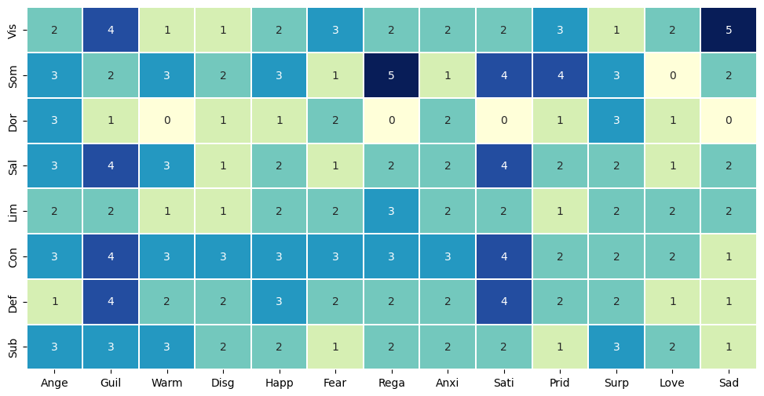
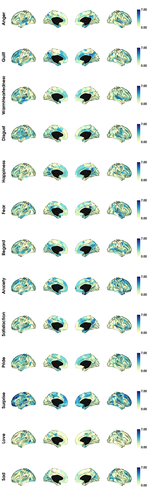
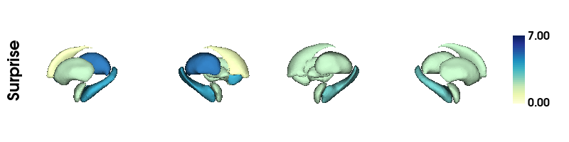

13. Emotion Count across Networks
[1]:
from src import *
import warnings
warnings.filterwarnings("ignore")
/Users/michaelc.c.h/opt/miniconda3/envs/brain2/lib/python3.8/site-packages/tqdm/auto.py:22: TqdmWarning: IProgress not found. Please update jupyter and ipywidgets. See https://ipywidgets.readthedocs.io/en/stable/user_install.html
from .autonotebook import tqdm as notebook_tqdm
Table of Contents
### Generating metric emotion correlation tables
[3]:
networks = list(index2region.keys())
select = ['Anger','Guilt','WarmHeartedness', \
'Disgust','Happiness','Fear','Regard','Anxiety', \
'Satisfaction','Pride','Surprise','Love','Sad']
movienames = [moviename.split('_')[0] for moviename in os.listdir('./resources/dynamic_grad/group_level414')
if '80' in moviename]
[5]:
# pairs = []
# for net in networks:
# for net2 in networks:
# if net == net2: continue
# if ((net,net2) not in pairs) and ((net2,net) not in pairs):
# pairs.append((net,net2))
# for moviename in tqdm(movienames):
# if moviename == "Rest": continue
# # 1. Loading Gradient
# G_movie, varM = load('./resources/dynamic_grad/group_level414/{}_40_grad.pkl'.format(moviename))
# # 2. Loading Matching Emotion Track
# full_df = pd.read_csv('./data/emotion_compileBIDS.csv')
# emo_df = full_df[full_df['filename']=='W_{}13.csv'.format(moviename)]
# other_df = full_df[full_df['filename']!='W_{}13.csv'.format(moviename)]
# # Grid for each network of correlation with emotions
# grad_idx = 0
# smfactor = 1
# tolshift = 0
# n = len(pairs)
# m = len(select)
# nb_metric = 3
# scores = np.zeros((nb_metric, n,m))
# nscores = np.zeros((nb_metric, n,m))
# # METRIC 1
# for idx, pair in enumerate(tqdm(pairs)):
# p1,p2 = pair
# y = np.asarray([networks_distance(G_movie[t], G_movie[t], p1, p2)
# for t in range(len(G_movie))])
# z1 = zscore(y)
# for jdx, emotion in enumerate(select):
# concat_other = np.array(other_df[other_df.item == emotion]['score'])
# emo_series = np.array(emo_df[emo_df.item==emotion]['score'])
# smoothened = overlap_add(emo_series, smfactor)
# z2 = zscore(smoothened[:z1.shape[0]])
# _, nscore, corr = moviemix_stat_test(z1, z2, concat_other)
# nscores[0, idx,jdx] = nscore
# scores[0, idx,jdx] = corr
# # METRIC 2
# for idx, R in enumerate(tqdm(networks)):
# y = np.asarray([network_volume(G_movie[t], R)
# for t in range(len(G_movie))])
# z1 = zscore(y)
# for jdx, emotion in enumerate(select):
# concat_other = np.array(other_df[other_df.item == emotion]['score'])
# emo_series = np.array(emo_df[emo_df.item==emotion]['score'])
# smoothened = overlap_add(emo_series, smfactor)
# z2 = zscore(smoothened[:z1.shape[0]])
# _, nscore, corr = moviemix_stat_test(z1, z2, concat_other)
# nscores[1, idx,jdx] = nscore
# scores[1, idx,jdx] = corr
# # METRIC 3
# for idx, R in enumerate(tqdm(networks[:3])):
# y = varM[:,idx]
# z1 = zscore(y)
# for jdx, emotion in enumerate(select):
# concat_other = np.array(other_df[other_df.item == emotion]['score'])
# emo_series = np.array(emo_df[emo_df.item==emotion]['score'])
# smoothened = overlap_add(emo_series, smfactor)
# z2 = zscore(smoothened[:z1.shape[0]])
# _, nscore, corr = moviemix_stat_test(z1, z2, concat_other)
# nscores[2, idx,jdx] = nscore
# scores[2, idx,jdx] = corr
# save('./resources/emo_metric_table/{}_40_2.pkl'.format(moviename),(nscores,scores))
[6]:
# # For each region generate correlation with emotions
# for moviename in tqdm(movienames[9:]):
# if moviename == "Rest": continue
# # 1. Loading Gradient
# G_movie, varM = load('./resources/dynamic_grad/group_level414/{}_40_grad.pkl'.format(moviename))
# # 2. Loading Matching Emotion Track
# full_df = pd.read_csv('./data/emotion_compileBIDS.csv')
# emo_df = full_df[full_df['filename']=='W_{}13.csv'.format(moviename)]
# other_df = full_df[full_df['filename']!='W_{}13.csv'.format(moviename)]
# n = G_movie.shape[1]
# m = len(select)
# scores2 = np.zeros((n,m))
# nscores2 = np.zeros((n,m))
# for idx in tqdm(range(n)):
# # y = np.asarray([ np.sum([points_distance(G_movie[t,idx], G_movie[t,jdx],pmethod="L2")
# # for jdx in range(len(G_movie[t,:])) ])
# # for t in range(len(G_movie))])
# y = np.asarray([ points_distance(G_movie[t,idx], G_movie[t,:].mean(axis=0),pmethod="L2")
# for t in range(len(G_movie))])
# ret_score, ret_nscore = shift_series_nulldistribution(y, other_df, emo_df)
# scores2[idx] = ret_score
# nscores2[idx] = ret_nscore
# save('./resources/emo_metric_table/parcel{}_40_2.pkl'.format(moviename),(nscores,scores))
Analysis of emo-metric-table
Counting significant correlations across networks and movies
[39]:
permovies = {}
countmovies = {}
for file in os.listdir('./resources/emo_metric_table/network_40_2_metric/'):
nscores, scores = load('./resources/emo_metric_table/network_40_2_metric/{}'.format(file))
nscores = nscores[1][:len(networks)]
# chop = (nscores < 0.05) * scores
# permovies[file.split('.')[0]] = chop
# countmovies[file.split('.')[0]] = np.array(nscores < 0.01 * (np.abs(scores) > 0.5) , dtype=float)
countmovies[file.split('.')[0]] = np.array(nscores < 0.05 , dtype=float)
[40]:
plt.figure(figsize=(12,6))
# plt.title("Number of significant correlations at 0.95")
x_axis_labels = [f[:4] for f in select] # labels for x-axis
y_axis_labels = [f[:3] for f in networks] # labels for x-axis
sns.heatmap(np.asarray(list(countmovies.values())).sum(axis=0), linewidth=0.1,
annot=True, xticklabels=x_axis_labels, yticklabels=y_axis_labels, cbar=False, cmap='YlGnBu')
[40]:
<AxesSubplot:>

Counting significant correlations across parcels and movies: - Cortical display of previous count - Subcortical display of previous count
[59]:
permovies = {}
countmovies = {}
for file in os.listdir('./resources/emo_metric_table/parcel_40_2/'):
nscores, scores = load('./resources/emo_metric_table/parcel_40_2/{}'.format(file))
# chop = (nscores < 0.05) * scores
# permovies[file.split('.')[0]] = chop
# countmovies[file.split('.')[0]] = np.array(nscores < 0.01 * (np.abs(scores) > 0.5) , dtype=float)
countmovies[file.split('.')[0]] = np.array(nscores < 0.05 , dtype=float)
Cortical Display
[61]:
# Cortical display of previous count
gs = np.asarray(list(countmovies.values())).sum(axis=0).T
# For a single movie: plots correlation of parcels versus emotions series
labeling = load_parcellation('schaefer', scale=400, join=True)
surf_lh, surf_rh = load_conte69()
mask = labeling != 0
cranges = [(0,gs.max()) for i in range(len(select))]
gs = gs[:,:400]
grad = [None] * len(select)
for k in range(gs.shape[0]):
# map the gradient to the parcels
# lb,rb = gs.min(), gs.max()
# , color_range=[(lb,rb),(lb,rb)]
grad[k] = map_to_labels(gs[k], labeling, mask=mask, fill=np.nan)
plot_hemispheres(surf_lh, surf_rh, array_name=grad, size=(800, 2600), cmap='YlGnBu',
color_bar=True, label_text=select, zoom=1., embed_nb=True, interactive=False,
transparent_bg=False, color_range=cranges)
[61]:

Subcortical Display
[62]:
with open('./data/labels/TC_sub14_labels.csv') as f:
text = f.readlines()
text = [t.strip() for t in text]
order = "left-accumbens, left-amygdala, left-caudate, left-hippocampus, left-pallidum, left-putamen, left-thalamus, right-accumbens, right-amygdala, right-caudate, right-hippocampus, right-pallidum, right-putamen, right-thalamus".split(',')
order = [' '.join(o.split('-')).strip() for o in order]
dataorder = [t.lower() for t in text]
orderidx = [order.index(o) for o in dataorder]
[77]:
from enigmatoolbox.plotting import plot_subcortical
# Project the results on the surface brain
gs = np.asarray(list(countmovies.values())).sum(axis=0).T
cranges = [(0, gs.max()) for i in range(len(select))]
gidx = 10
plot_subcortical(array_name=gs[gidx,400:][orderidx], ventricles=False, size=(800, 200),
cmap='YlGnBu', color_bar=True,embed_nb=True, color_range=cranges[gidx]
, label_text=['{}'.format(select[gidx])], interactive=False,transparent_bg=False, zoom=1.)
[77]:

[ ]: